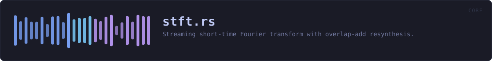

crates/veilvoice-core/src/stft.rs
veilvoice-core · 246 lines · read the source
Streaming short-time Fourier transform with overlap-add resynthesis.
Structure follows the classic FIFO/overlap-add pipeline (as popularised by Bernsee's SMB pitch shifter): samples flow in and out one-for-one with a fixed latency of n - hop samples, and a full frame is analysed/synthesised every hop input samples. The caller supplies a closure that rewrites the complex spectrum in place, keeping the FFT plumbing and the de-identification maths cleanly separated.
The closure also receives the raw (unwindowed) analysis frame. Accent neutralisation needs a time-domain view to track f0 — the FFT resolution at useful frame sizes is far too coarse for that — and handing over the frame that produced the spectrum keeps the two perfectly aligned. Its newest hop samples are the tail.
WHAT CALLS WHAT
The functions this file defines, and the calls between them. An edge means the callee's name appears, called, inside the caller's body — a syntactic reading, not a type-resolved one.
The same graph as Mermaid source
%%{init: {"theme":"base","themeVariables":{"background":"#1a1b26","primaryColor":"#1f2335","primaryTextColor":"#c0caf5","primaryBorderColor":"#7aa2f7","secondaryColor":"#16161e","tertiaryColor":"#16161e","lineColor":"#737aa2","textColor":"#c0caf5","mainBkg":"#1f2335","nodeBorder":"#7aa2f7","clusterBkg":"#16161e","clusterBorder":"#2f3549","fontFamily":"ui-monospace, SFMono-Regular, Consolas, monospace","fontSize":"14px"}}}%%
flowchart TD
n_new(["StftEngine::new<br/>pub"])
n_latency_samples(["StftEngine::latency_samples<br/>pub"])
n_process(["StftEngine::process<br/>pub"])
n_process_frame["StftEngine::process_frame"]
n_process --> n_process_frameThis site loads no third-party script, so it cannot run Mermaid; the diagram above is the same nodes and edges drawn by the generator instead. GitHub renders the source below directly.
ITEMS
| Item | Line | Documentation |
|---|---|---|
StftEngine pub struct | 23 | Reusable streaming STFT engine (single channel). |
StftEngine::new pub fn | 47 | n must be even; hop must divide evenly for constant overlap-add (typical: hop = n/4). |
StftEngine::latency_samples pub fn | 85 | End-to-end algorithmic latency (group delay) in samples. |
StftEngine::process pub fn | 92 | Process input into output (equal length). |
StftEngine::process_frame fn | 141 |